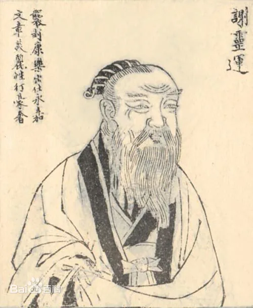
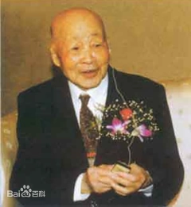

|
|
浙江温州 |
| 首页 | 温州雁荡山 | 温州名人 | 温州风情 | 地理位置 | 航拍温州 |
|   |
谢灵运的山水诗，开创了中国山水文学的新境界。他在既往文学作品写景经验的积累之上，创造性地将多重艺术表现手法运用在其山水诗的创作中。在他的山水诗中，山水诗充满新鲜感甚至是陌生感的、或幽深或明丽的景观，为读者呈现出如同实景，而又超越实景的诗化的“自然”。同时，由于谢灵运的山水诗以“言志”为旨归，因而，自然山水又是他抒发情感的载体，总是蕴含着作者主观的情绪。由此，形成了谢灵运山水诗独特的自然、人文韵味。 苏步青的研究方向主要是微分几何。苏步青的大部分研究工作是属于仿射微分几何学和射影微分几何学方向的。此外，他还致力于一般空间微分几何学和计算几何学的研究。他创立了国际公认的浙江大学微分几何学学派 苏步青从事微分几何、计算几何的研究和教学70余载，自1931年到1952年间，苏步青培养了近100名学生，在国内10多所著名高校中任正副系主任的就有25位，有5人被选为中国科学院院士，连解放后培养的3名院士，共有8名院士学生。在复旦数学研究所，苏步青更有，形成了三代四位院士共事的罕见可喜现象。 |
| 瓯越之都，鱼米之乡 |